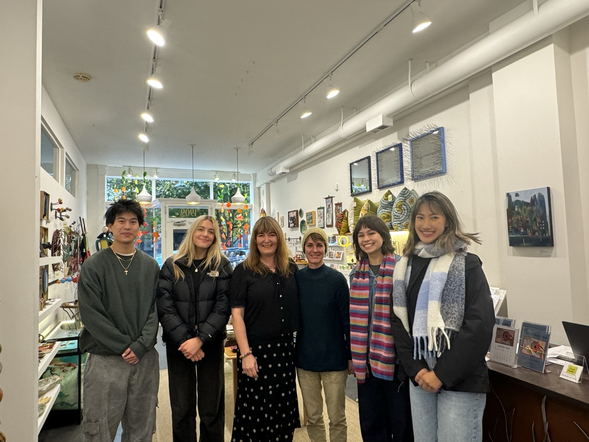
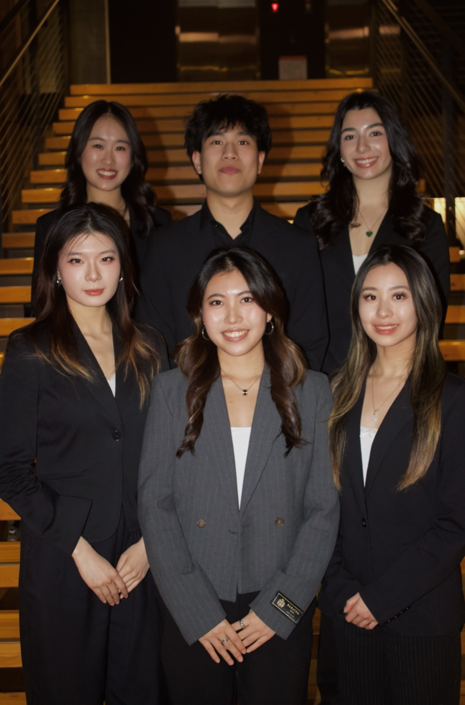

University of Washington
Majoring in Finance and Information Systems with a minor in Informatics.
pages from my work and life so far ↓
Mission Statement
My mission is to help brands grow by combining thoughtful storytelling with data-backed strategy. I believe that marketing should feel human and still perform, so I focus on understanding people first, then translating insights into clear positioning, strong visual direction, and measurable campaigns. I'm especially interested in work where creativity and analytics weave together, building content and systems that earn attention, trust, and lasting long-term impact.
Learn more about me.
Majoring in Finance and Information Systems with a minor in Informatics.
Executive Board, Marketing Intern. Owning strategy, design and copy for a 1,000+ audience, and building ABSA's first website.
Executive Board, New Member Educator (Jan – Aug 2026). Ran the new member education program for UW's professional business fraternity.
STLP Assistant. Processing 200+ equipment loans per quarter across 4 campus locations.
Scroll through my story →
Private Tutoring Business · Vancouver, BC
Ran a tutoring practice with 10+ recurring clients and 100+ sessions a year; edited 20+ admissions essays.
American Marketing Association · Seattle, WA
Advised a handcrafted home goods business on brand repositioning, social redesign and an e-commerce strategy.
Phi Chi Theta · Seattle, WA
Led an 8-person content committee and built the chapter website for a 60-member chapter.
Phi Chi Theta · Seattle, WA
Redesigned the new member program and taught weekly lectures to 15+ new members.
Student Technology Loan Program · Seattle, WA
Process 200+ equipment loans per quarter across 4 campus locations.
PresentAsian Business Student Association · Seattle, WA
Own marketing for a 1,000+ audience and am building ABSA's first website in WordPress.
PresentFubon Securities · Taipei, Taiwan
Built an AI news-briefing agent that cut daily prep from 60 to 10 minutes; mapped 50+ semiconductor firms.
University of Washington · Foster School of Business
B.A. Business Administration, Finance & Information Systems. Expected.
Featured work.

A weekly stock idea and market report written for the institutional desk.

Brand repositioning, social redesign and an e-commerce plan for a Seattle home goods business.

Graphic and video recruitment content led by an 8-person committee.
See everything.
Say hi!
Open to internships, collaborations, and coffee chats.
ethany35@uw.edu